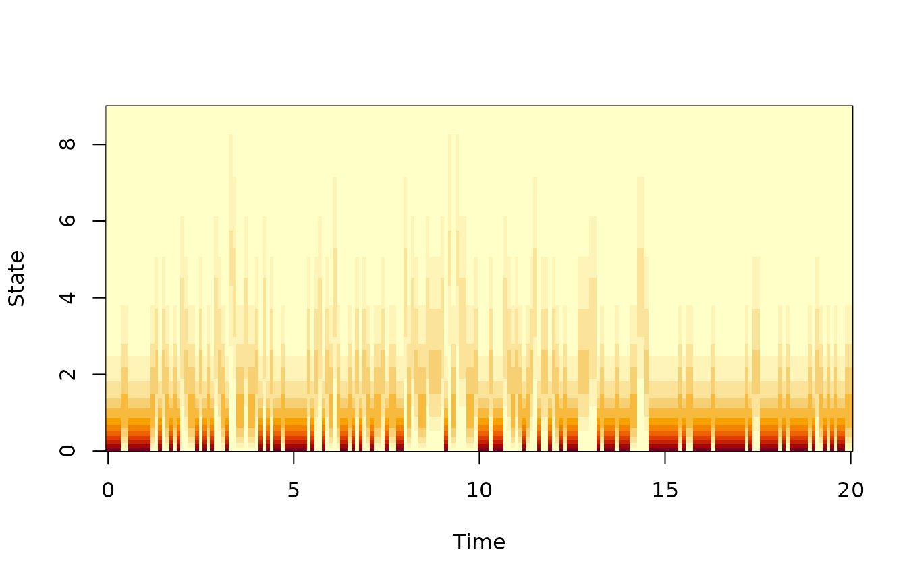
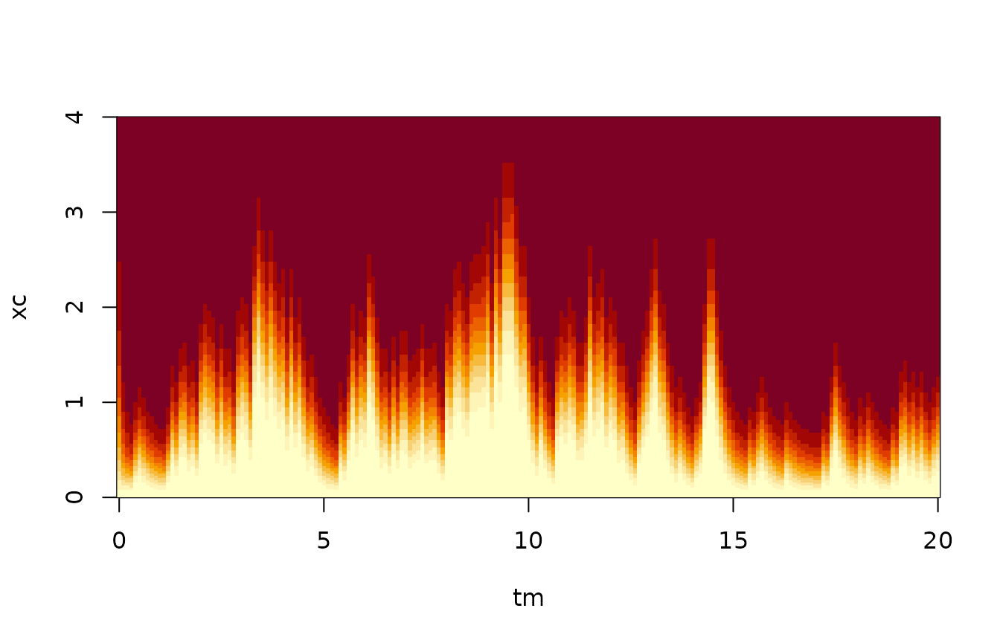

vignettes/HMM-filtering-of-scalar-SDEs.Rmd
HMM-filtering-of-scalar-SDEs.RmdWe simulate a sample path from the Ito stochastic differential equation governing the abundance of a bacterial population
\[ dX_t = (1- X_t) ~dt + \gamma \sqrt{X_t} ~dB_t \]
which is the Cox-Ingersoll-Ross model. Then, we simulate random measurements taken at times \(0,dt,2~dt, \ldots, T\) so that \(Y_i | X_{t_i}\) is Poisson distributed with mean \(v `. X_{t_i}\). Then, we pretend that we don’t know the states and re-estimate them from these measurements.
We define the model and simulate the states using the Euler-Marruyama method.
## Loading required package: SDEtools
# Define model. Note abs to handle negative x.
gamma <- 1
f = function(x) (1-x)
g = function(x) gamma * sqrt(abs(x));
## Time vector for simulation
dt = 0.001;
Tmax = 20;
tvec = seq(0,Tmax,dt)
nt <- length(tvec)
## Initial condition, chosen somewhat arbitrarily
x0 <- 0.1
## Enforce that the simulated state should be non-negative
p <- function(x) abs(x)
## Simulate states
sim <- euler(f,g,tvec,x0,p=p)
plot(sim$times,sim$X,type="l",xlab="Time",ylab='Abundance')Next, we generate some random measurements. Measurements are taken at regular points in time; not at every time point where are state values is simulated. We use a Poisson distribution for the measurements. This correspond to a situation where we count the number of individuals in a small sample from the environment.
## Generate random measurements
tsample <- 0.1
vsample <- 1
sampleIndeces <- round(seq(1,length(tvec),(tsample/dt)))
tm = tvec[sampleIndeces];
xtrue <- sim$X[sampleIndeces]
ymean = vsample * xtrue
# Generate random measurements
ymeas <- rpois(length(tm),lambda=ymean)
plot(sim$times,sim$X,type="l",xlab="Time",ylab='Abundance')
points(tm,ymeas/vsample,pch='o')To run the filter, we must first specify the likelihood function. We first define this for a general measurement and general state:
## State likelihood
dl <- function(x,y) dpois(y,lambda=vsample*x)We can now inspect the state likelihood on its own, i.e., without using the process equation. We choose a discretization of state space. We choose to use a grid that has higher resolution near 0, and tabulate the likelihood function.
## Choose discretization of state space
xi <- seq(0,3,0.025)^2 # Cell Interfaces
xc <- cell.centers(xi)
ltab <- outer(xc,ymeas,dl)
image(tm,xc,t(ltab),xlab="Time",ylab="State")
We plot the most likely state, given just the measurements, on top of the true states:
There is very little information in the individual observation, because the counts are so low. Therefore, there is a potential gain from estimating the state not just using the measurement taken at the same time, but also the neighbouring measurements. This is particularly so because the measurements are taken quite frequently: The sample interval is 0.1 time unit, while the mean relaxes over a time scale of 1.
We now use the filter to add the information from the process equation. We use the function HMMfilterSDE, which require a process model as well as a likelihood function. In addition, it needs a distribution of the initial state. We focus on real-time state estimation; i.e., we use only the current and past measurements in the estimation, not future measurements.
# Advection-diffusion form of the Kolmogorov equations
D = function(x) 0.5*gamma^2*x;
u = function(x) f(x) - 0.5*gamma^2;
## Specify prior c.d.f. of the initial state, here uniform. Note that it does not have to be normalized.
phi0 <- function(x)x
## Run the filter
filter <- HMMfilterSDE(u,D,xi,bc='r',phi0,tm,ymeas,dl)## Loading required package: Matrix
We compare the true states with the estimated ones:
## Plot true state at times of measurements
plot(tm,ymean/vsample,type="l",xlab="t",ylab="x")
## Compute and plot posterior mean
XestMean <- filter$psi %*% xc
points(tm,XestMean)Notice that the estimated states lag a bit behind the true ones, and that some of the fast fluctuations in the true states do not reflect in the estimated ones. These features are as expected.
We can compare the expectation and the variance in the posterior distribution:
plot(XestMean,XestVar)Note that there seems to be a roughly linear relationship (save the first couple of data points, which reflect transients from the initial condition). This linear relationship reflects both process noise and measurement noise: When the state is large, the process noise is increased, and the variance on the measurements is larger.
The function HMMfilterSDE can also gived “smoothed” states, i.e., estimates that are based on all measurements, both past and future. You can compare the performance of the estimates we have shown here, with these smoothed estimates.
You could also estimate the states between the measurements, for example by having a state likelihood function which is constant to 1 whenever no measurement is taken. Then, you could investigate how the posterior variance evolves between times of measurements.